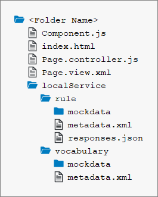

A business rule is a logic that defines some aspect of business and always resolves to either true or false. This logic can be maintained by non-technical users via a simplified rule language and user interface. Thus, business rules allow your application’s customers to add their own logic without needing technical customization or coding.
The rule builder control enables business users to create and edit business rules in applications based on SAPUI5. The control defines SAP standard UX for creating business rules in an SAP Fiori application and should be the default UI component for SAP Fiori UI developers to add business rule capabilities.
The sap.rules.ui library provides controls to manage business rules. The two
main components are:
RuleBuilder – Provides visualization of the rule in the form of a decision
table and text rule to simplify the creation and editing of the rule's business
logic.The visualization provided by the RuleBuilder component contains text parts
and the expression language services support the end user in creating and editing those
text parts.
You do not have to do the tutorial steps sequentially; you can start the tutorial at any step
you want. Just download the code, copy it to your workspace and make sure that
the application runs by calling the index.html file.
You can view and download all the files required for steps 1 and 2 in decision table section at Rule Builder - Guided Decision Table. This is applicable only for decision table rules modeled using rule expression language.
You can view and download all the files required for steps 1 and 2 in text rule section at Rule Builder - Text Rule.
For more information, check the following sections of the tutorials overview page (see Get Started: Setup, Tutorials, and Demo Apps):
You can model rules using an expression language. There are two expression languages supported by the rule builder:
Expression Language 1.0 (Rule Expression Language): Expression language 1.0 enable users to define business decision logic in simple readable syntax. This is the default language supported by the rule builder. A typical rule condition in expression language 1.0 is as shown below:
customer_name of the customer is equal to 'John
Expression Language 2.0 (DMN SFEEL): Expression language 2.0 or DMN SFEEL is a subset of the Friendly Enough Expression Language (FEEL), provides a standard syntax for rule conditions, and reduces ambiguities while modeling a rule. A typical rule condition in expression language 2.0 is as shown below:
customer.customer
name MATCHES 'John'Key features of expression language 2.0 include:
Autosuggest list is a suggestion dropdown menu that lets you select the required element of the rule expression. You do not have to type the rule expression in the corresponding fields.
You can also type the rule expression in the field and select the corresponding vocabulary elements from the autosuggest list. Using free flow typing, you can also edit and delete the tokens in a rule expressions.
In the following rule expression:
DO1.Equipment = 'Laptop' AND DO2.Date = 'Dec 3, 2020'
If the cursor is placed between DO and 1, then all the data objects starting with DO are listed in the autosuggest list. Similarly, according to the cursor position, the corresponding data object or attribute name is listed.
To change a date or timestamp value, edit the value in the Fixed Value field of the autosuggest list.
If the cursor is placed before the attribute name Equipment, then the attribute name is deleted.
If the cursor is placed in between or before the data object name, DO1, then both the data object and attribute name, DO1.Equipment, is deleted.
Expression language 2.0 supports the use of vocabulary rules. The rules which can be used in a rule expression are called vocabulary rules. The result returned by the vocabulary rule can be consumed in a rule expression.
The following are the objects for each expression language:
| Expression Language | Expression Language Object |
|---|---|
| Expression language 1.0 | ExpressionLanguage |
| Expression language 2.0 | AstExpressionLanguage |
You can change the expression language from Expression Language 1.0 to Expression Language 2.0. You can only change the expression language from 1.0 to 2.0 and not the vice versa.
To migrate to Expression Language 2.0, set the expression language object to
AstExpressionLanguage in the your code as
shown:
oExpressionLanguage = new sap.rules.ui.services.AstExpressionLanguage(); oRuleBuilder.setExpressionLanguage(oAstExpressionLanguage);
For more information, see Coding section in
You should already know about SAPUI5 application development and the SAP Rules framework.
For more information, see the documentation for the SAP HANA Rules Framework on the SAP Help Portal at https://help.sap.com/viewer/p/SAP_HANA_RULES_FRAMEWORK.
This tutorial uses the OData V2 mock server to provide the required data. Before proceeding with this tutorial, ensure that you are familiar with the concepts introduced in the following tutorials:
Alternatively, you can use a properly configured backend system with the following implemented OData services:
We will use a simple HTML page that will serve as a single-page application. There we will define the content of this page, which will include
the meta tags, a script tag to load the SAPUI5
sap.rules.ui libraries, and the RuleBuilder control with data from the OData V2 mock server.
For this tutorial, you will be creating a folder with the following files:
